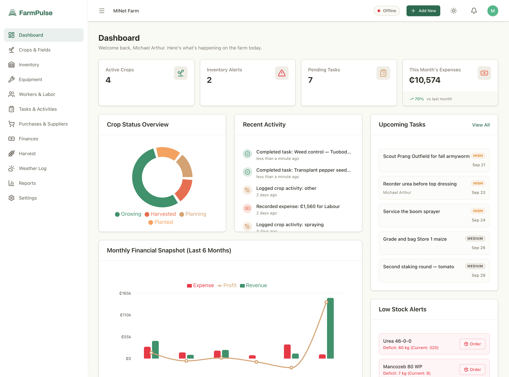
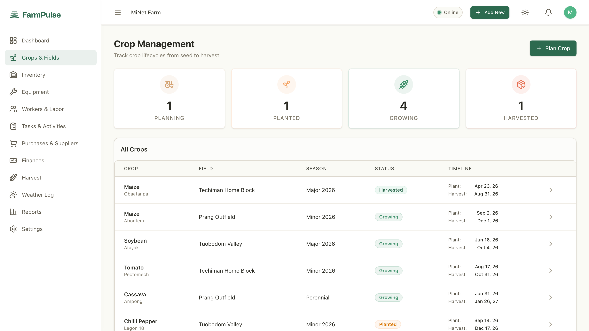
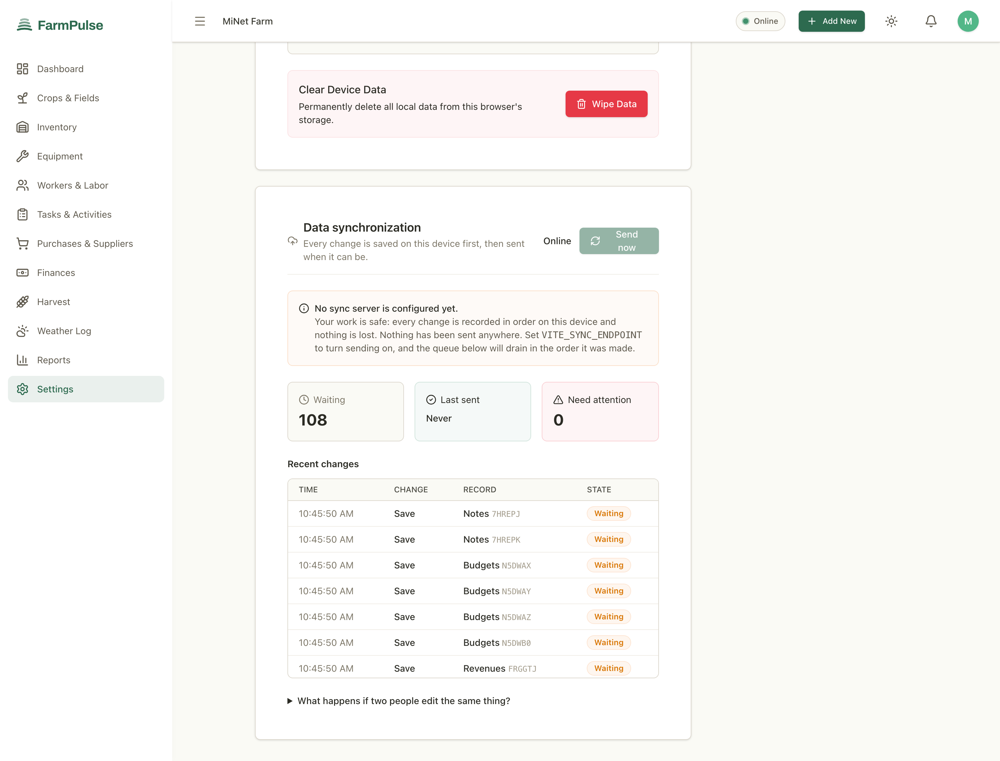
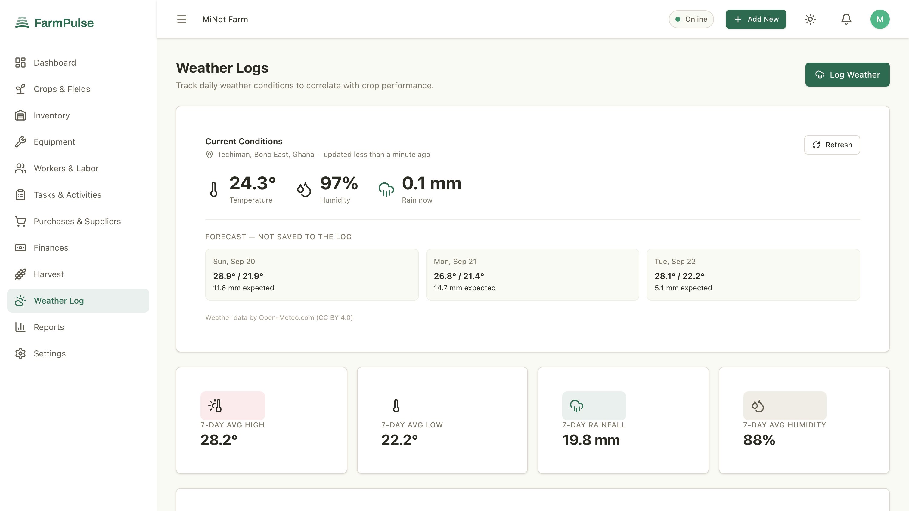
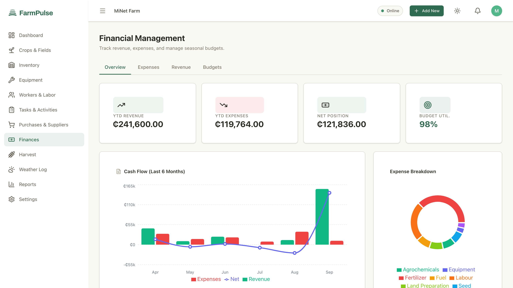
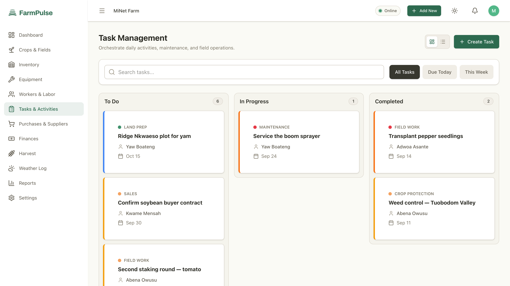
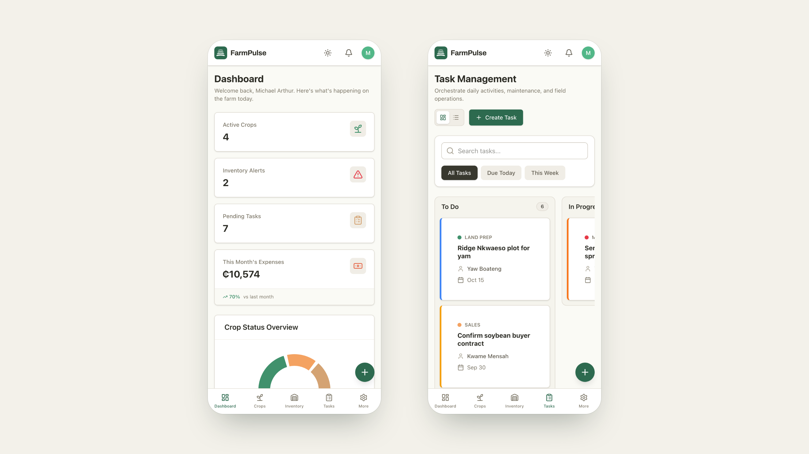

Product Design
Installable PWA + Append-Only Sync Engine + Automatic Field Weather

The dashboard with the connection cut — every figure on this screen is read from the device
FarmPulse is an offline-first farm management system I designed and directed for MiNet Farm, a mixed crop operation working plots across Techiman and Prang in Ghana's Bono East Region. It covers the whole operation in one installable app — fields, crops, activities, harvests, inventory, suppliers, purchase orders, equipment, workers, labour, finances, tasks, weather and notes — and it does all of it with the connection off.
The premise is a single sentence: the device is the source of truth until the server says otherwise. Every record is written to the phone or tablet first and queued for sending; nothing waits on a network that may not arrive for days. The design work was less about drawing screens than about deciding what the software is allowed to claim — and making sure the interface never tells a farmer their work is safe when it isn't.
Farm software assumes a connection. Almost all of it is a cloud form with a spinner: you tap Save, it posts to a server, and if the server isn't reachable the record simply doesn't exist. On a farm in Bono East that is a daily condition, not an edge case. Coverage drops between plots, data runs out mid-month, and the moment a record matters most — standing in the field, counting bags at the scale, paying a crew at dusk — is exactly when there is no signal.
The practical result is that the recording gets deferred. Work is noted on paper, in a phone's notes app, or in someone's head, and entered later if at all. By the time it reaches a spreadsheet the numbers have drifted: labour days are rounded, input quantities are guessed, and nobody can answer the question that actually matters at the end of a season — did this field make money?
There was a second, subtler problem, and it shaped the project more than the first. The initial version of this app had a sync screen that simulated syncing — a timer, a progress bar, a random failure rate. It always finished green. A farmer with a week of unsent work would have seen a tick mark and believed it. An interface that lies about whether data is safe is worse than one that has no sync at all, because it removes the instinct to keep a paper backup.
FarmPulse is one installable progressive web app with a local database as its primary store and a durable outbound queue behind it, structured in three layers:
@minet/offline-sync): Every change is recorded as an operation in an ordered, append-only log carrying its own identity. An operation leaves the queue only when a server confirms it, or when it is parked as permanently failed and shown to the user with the reason.
Crops & Fields — every crop tied to a named plot, a season, and a planting-to-harvest window
I started from the season rather than from a feature list. A crop moves through land preparation, planting, fertilising, weeding, spraying, harvest, drying, bagging and sale; money and labour attach at every one of those steps, and inputs are drawn down from a store that has to be reordered before it runs out. I mapped that cycle and asked the same three questions at each step: what gets recorded here, who records it, and what happens if there is no signal when they do?
From that mapping I set the core requirements:
I designed the module structure, screens and interaction flows, then directed the build with AI-assisted development tools — defining what to build and how each interaction should behave, and working in reviewable stages so each module was verified before the next was built on top of it. The sync layer carries 116 automated tests, including one that fails if a new table is added to the database without declaring a conflict policy for it.
-₵1,200.00, not ₵-1,200.00.
The sync panel — the queue, in order, with an honest count and an honest "Last sent: Never"
The rule of thumb is that anything recording what happened cannot conflict, and anything recording what is currently true can. Every table in the database is assigned to one of the two, deliberately, in a single list a person can find and argue with:
| Policy | Applies to |
|---|---|
| Append-only cannot conflict; nothing is ever lost |
Crop activities, harvests, stock movements, equipment logs, labour, expenses, revenue, weather readings, notes |
| Last-writer-wins a concurrent edit will be discarded |
Farms, fields, crops, inventory, suppliers, purchase orders, equipment, workers, budgets, tasks, users |
A harvest weighed on two phones on the same afternoon produces two harvest records, which is correct — both weighings happened. A crop's status edited on two phones produces one winner, which is a genuine loss of information, and so it is named on the settings screen rather than hidden in a changelog.
┌────────────────────────────────────────────┐
│ FarmPulse PWA │
│ React 19 + TypeScript │
│ │
│ 12 modules: fields, crops, inventory, │
│ equipment, labour, finances, harvest │
│ │
│ reads and writes, always │
│ │ │
│ ▼ │
│ ┌──────────────────────────────────────┐ │
│ │ Dexie / IndexedDB │ │
│ │ the device is the source of truth │ │
│ └──────────────────┬───────────────────┘ │
│ │ every change │
│ ▼ │
│ ┌──────────────────────────────────────┐ │
│ │ syncOps: append-only oplog │ │
│ │ ULID identity, ordered, idempotent │ │
│ │ leaves only on confirm, or on a │ │
│ │ parked failure shown with its reason │ │
│ └──────────────────┬───────────────────┘ │
└─────────────────────┼──────────────────────┘
│ when a connection exists
┌───────────────┴───────────────┐
▼ ▼
┌─────────────────────┐ ┌──────────────────────┐
│ Sync endpoint │ │ Open-Meteo │
│ replays ops, and a │ │ keyless, CC BY 4.0 │
│ repeat is a no-op │ │ observed -> log │
└─────────────────────┘ │ forecast -> display │
└──────────────────────┘
The device is not a cache of the server. The server is a destination for a log the device already owns.

Weather — live conditions for the farm's own coordinates, with the forecast fenced off from the log

Finances — a season's cash flow in the currency the farm actually trades in

Tasks — field work assigned to named people, with the week's priorities visible at a glance
The people who generate the records are not at a desk. The layout collapses to a single column with a five-item bottom bar and a persistent add button, so logging a labour day or a harvest is a few taps at the point the work happens rather than an evening's data entry. Because the app is installed to the home screen and its shell is precached, it opens from a cold start with no connection — I verified this against the production build with the network disabled: the app reloads and every module renders from the device.

Installed on a phone — the same records, the same offline behaviour, one thumb
The farm's data lives on the farm's devices. There is a one-tap JSON export of everything the device holds, so a backup is never contingent on a server being reachable or a subscription being current. The sync endpoint is configuration, not a dependency: point it at a server and the queue drains in the order it was made; leave it unset and the app keeps working and says plainly that nothing has been sent. Migrations follow the same principle — when an old sync log could not be converted into real operations because it carried no payload, it was cleared rather than reconstructed, because converting it would have meant inventing data.